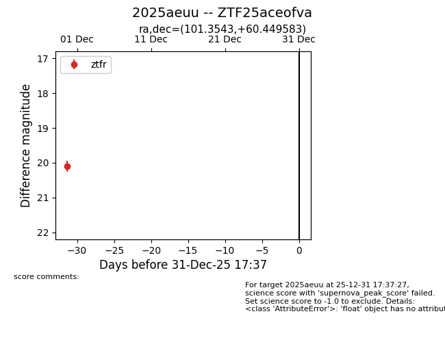
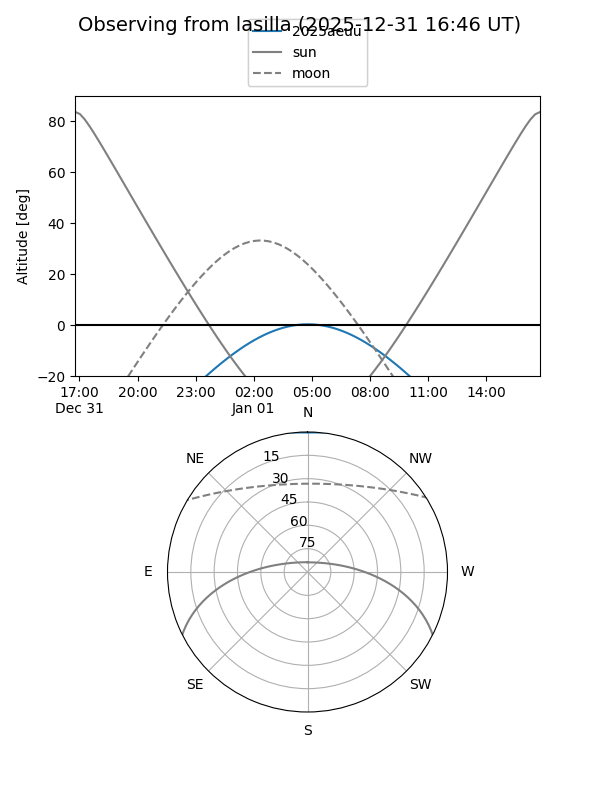
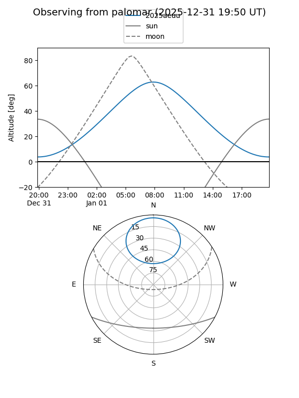

2025aeuu
Target 2025aeuu at 2025-12-31 17:59
Aliases and brokers:
FINK: link
Lasair: link
ALeRCE: link
TNS: link
YSE: link
alt names
ZTF25aceofva (ztf,fink_ztf)
2025aeuu (tns,yse)
Coordinates:
equatorial (ra, dec) = 101.3543,+60.44958
equatorial (HMS+DMS) = 06:45:25.04,+60:26:58.50
galactic (l, b) = (155.2237,+22.65250)
Flags:
Photometry:
last ztfr=20.10
1 ztfr detections
Lightcurve

Visibility


Additional plots